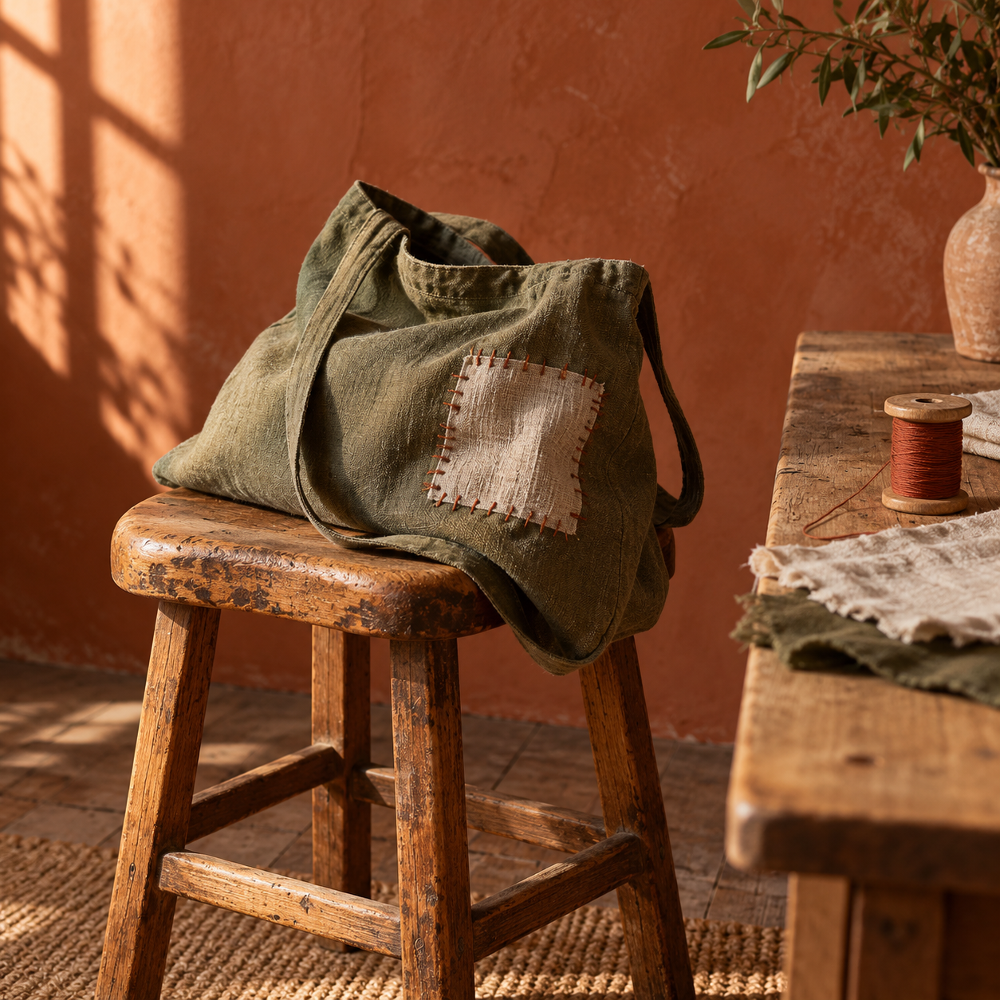

<!doctype html><html lang="en"><meta charset="utf-8"><meta name="viewport" content="width=device-width,initial-scale=1"><title>Mend what matters · A Terracotta study</title><style>
*{box-sizing:border-box}body{margin:0;background:#F3E8DA;color:#3A2A20;font:18px/1.6 Inter,Arial,sans-serif}h1,h2,p,figure{margin:0}main{max-width:1800px;margin:auto;display:grid;grid-template-columns:.9fr 1.1fr;min-height:1000px}.story{padding:44px 60px 26px;display:flex;flex-direction:column}.masthead{display:flex;justify-content:space-between;gap:20px;font-size:12px;letter-spacing:2px}.title{margin-top:90px}h1{font:400 112px/.99 Fraunces,Georgia,'Times New Roman',serif;letter-spacing:-5px}h1 span{color:#C0583A}h1 em{font-weight:400}.description{font-size:19px;max-width:360px;margin-top:30px;color:#7D6A5B}.details{margin-top:45px;display:grid;grid-template-columns:100px 1fr;gap:18px;border-top:1px solid #b4a28d;padding-top:23px}.date{font:54px/1 Georgia,serif;letter-spacing:-2px}.date small{font:12px/1.8 Arial,sans-serif;letter-spacing:2px;display:block;margin-top:12px}.place{font-size:17px;max-width:280px}.place small{display:block;font-size:14px;color:#7D6A5B;margin-top:10px}.session{margin-top:30px;max-width:390px}.session p{font-size:13px;color:#7D6A5B}.choices{display:flex;flex-wrap:wrap;gap:10px;margin-top:11px}button{font:14px Inter,Arial,sans-serif;padding:10px 14px;border:1px solid #7D6A5B;background:transparent;color:#3A2A20;cursor:pointer}button[aria-pressed=true]{background:#6E7B3B;border-color:#6E7B3B;color:white}button:focus-visible{outline:3px solid #C0583A;outline-offset:4px}.response{min-height:25px;font-size:14px;color:#6E7B3B;margin-top:12px}.photo{position:relative;min-height:1000px;background:#C0583A}.photo img{width:100%;height:100%;position:absolute;inset:0;object-fit:cover;object-position:46% 50%}.photo figcaption{position:absolute;bottom:25px;left:30px;right:30px;color:#fff8ee;font-size:12px;letter-spacing:1px;text-shadow:0 1px 7px #24120c}.colophon{margin-top:auto;padding-top:30px;color:#7D6A5B;font-size:11px;line-height:1.7}.colophon strong{color:#3A2A20;font-weight:500} @media(max-width:1000px){.story{padding-left:38px;padding-right:38px}h1{font-size:92px}.title{margin-top:70px}} @media(max-width:720px){main{display:flex;flex-direction:column;min-height:0}.story{padding:28px 26px}.title{margin-top:45px}h1{font-size:91px;letter-spacing:-4px}.description{font-size:18px;margin-top:24px}.details{margin-top:32px}.photo{min-height:0;height:480px;order:2}.photo img{object-position:45% 50%}.colophon{padding-top:25px}.photo figcaption{left:22px;bottom:18px;font-size:10px}}
</style><main><section class="story"><header class="masthead"><strong>MENDING ROOM</strong><span>NO. 01 / 2026</span></header><div class="title"><h1><span>Mend</span><br>what<br><em>matters.</em></h1><p class="description">A small workshop for the things<br>you want to keep.</p></div><section class="details"><p class="date">08<small>NOVEMBER</small></p><div class="place">Northbank<br>Community Workshop<small>Canvas, wood, and conversation.<br>A fictional community event.</small></div></section><section class="session"><p>Choose a visit time</p><div class="choices" role="group" aria-label="Visit time"><button aria-pressed="true">10:00–11:30</button><button aria-pressed="false">14:00–15:30</button></div><p class="response" id="response" aria-live="polite"></p></section><footer class="colophon"><strong>MuseDraw / Terracotta</strong><br>Local demonstration: choosing a time does not submit a booking.</footer></section><figure class="photo"><figcaption>CARE MAKES ROOM FOR ANOTHER YEAR.</figcaption></figure></main><script>const buttons=[...document.querySelectorAll('.choices button')];buttons.forEach(b=>b.onclick=()=>{buttons.forEach(x=>x.setAttribute('aria-pressed',String(b===x)));document.getElementById('response').textContent='Selected: 08 November, '+b.textContent+'.';});</script></html>